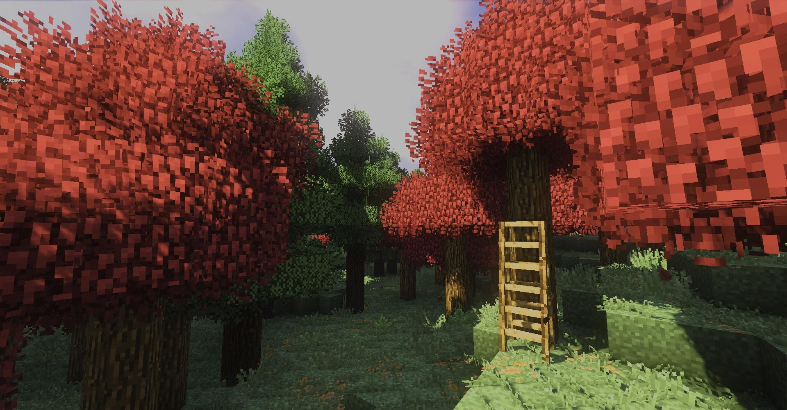

⚠ This page is still under construction. Some info may be missing.
# hi!

# 🔥 Firestarter: The Guide
Howdy! Welcome aboard to Firestarter, a friendly, community-focused Minecraft multiplayer realm! This guide will outline all of the things you need to know when playing on Firestarter!
### 🚩 Ground Rules
We try to have loose rules so that everyone can have fun on Firestarter, but some things must be regulated and it's important that you
know our rules before playing! Run `/rules` in game to view them.
# 🌎 Getting started
### 🧭 Locating free land
When you first join, you are at spawn. Once you are ready to start your adventure, you can walk away from spawn or use the command
`/wild` to be teleported to a random location in the world map where there are no players nearby. You can use this command every
5 minutes.
### 🏹 Protecting your land
Once you have located some plot of land that you like, you can build there! However, anyone is able to come along and take your stuff
if you don't protect it! On Firestarter, we have land claims which can be used to completely protect your land from others that are
untrusted.
Simply use the command `/claim` to receive a claim kit, and right click the opposite corners of your claim with the golden
shovel you receive. You will need lots of claim blocks for larger claims, which can be obtained by voting for the server or by simply
playing on the server! You receive **70 claim blocks per hour of play**.
If you have friends that you would like to allow access to your claim, you can run the command `/trust (player's name)` to allow them
complete access to your claim. If you would like to allow specific types of trust, `/accesstrust`, `/containertrust`, and `/permissionstrust` also exist.
Watch the video below to see claiming in action:
### 🗺 Getting back to your claims
After you claim your land, you don't want to lose it! You are able to set waypoints to any area on the server, called "homes", that you can visit at any
point in time. Stand in a location where you would like to set a home, type `/sethome (name of the home)`, and a new home will be created! You can view
your existing homes by typing `/homes`. If you would like to teleport back to your home later on, you can simply run the command `/home (name of the home)`.
### ☠ Death
Since we do not have keep inventory enabled, if you die, you will drop all of your items and lose your experience levels. Other players will not be able to pick
up your drops, however, unless you run the command `/unlockdrops`. If your items fall in lava, they are **lost forever**. If you would like to get back to your
death point, you can run the command `/back` to be teleported to the nearest safest location around where you died.
# 💰 Economy
### 💸 Checking your balance
To check the amount of money you have, you can use the `/balance` command. If you want to give other players money, you can `/pay (player's name)`. This is useful
when trading items with other players!
### 🎺 Other stuff
If you would like to support us on our mission to continuously improve the server, you can donate to us by purchasing an in-game rank!
Currently, the only rank we have available is Spark rank, which you can purchase at our [donation store](http://firestartermc.tebex.io/). Any and all donations are
massively appreciated and we hope you enjoy the rewards!